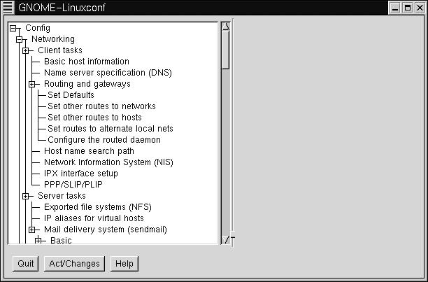

7.4. Linuxconf - Universal (almost) Linux PPP dialer
For help at any time while using Linuxconf, just hit the help key. Linuxconf has contextual help menus for most its functionality.
Linuxconf's PPP section is fairly simple. First of all, open up Linuxconf. This must be done as root. Here's a shot of Linuxconf in action:

Click on the box next to "Config", then the box on "Networking", then the box next to "Client tasks". You should see an entry called "PPP/SLIP/PLIP". Click on that. On the right hand side of Linuxconf, you should now see a box called "PPP/Slip/Plip configurations". There should be an area below that, listing existing PPP devices(if any) and three buttons below that.

Click "Add" to add a new connection. It will then ask you to select a type of interface. Make sure "PPP" is selected, then press Accept.

In this box, there are fields for phone number, modem, username and password. Enter the appropriate information into the appropriate fields, and you should be configured.
To bring up the PPP link, open the "Control" tab on the left hand side, then go to "Control Panels", then "Control PPP/SLIP/PLIP Link". You should see a list of PPP devices. Click on the one you just made. A question will pop up, asking you if you wish to activate the connection. Click "Yes".

There are also advanced configuration options, such as modem speed, connect scripts and etc. If you need to configure any of that, go back to the place where you originally configured the link, and click on the link you wish to customize. It should bring up a screen with four tabs: Hardware, Communication, Networking,and PAP.
It is advisable to not change any of these options unless you are specifically told to do so by your ISP or modem vendor. Most of them will work just fine without any additional configuration.
Linuxconf also has command line tools for use in bringing your PPP connection up and down:
netconf --connect pppsetup [--fore] This will bring the link up. The optional --fore means that it remains in the foreground. Otherwise it will terminate either if the connection is successful or if it fails. It will return 0 if successful, higher if otherwise.
netconf --dialctl This will display all the available connections and their status.
netconf --disconnect pppsetup This will disconnect the link.